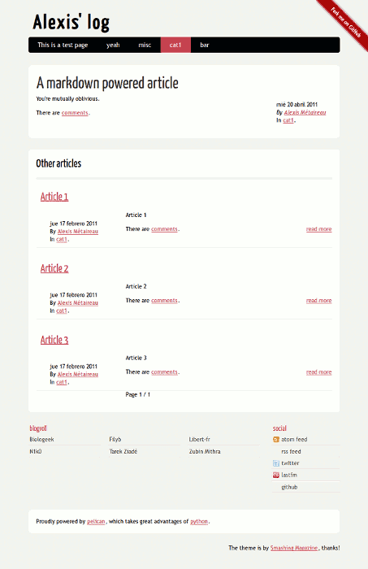

Pelican es un generador de sitios web con contenido estático. Está orientado originalmente a la creación de blogs. Pelican (Pelicano) es una anagrama de la palabra francesa Calepin que significa en español "cuaderno de notas" (blog). Su creador y desarrollador principal es el programador francés Alexis Métaireau. Y es la aplicación que genera el contenido para este blog. Personalmente le veo muchas ventajas frente a una plataforma de blogs convencional como Wordpress o Drupal, como ya comentaba en mi anterior articulo.
Pelican genera este contenido estático (páginas HTML) a partir de ficheros de texto plano formateados en un lenguaje de marcado ligero como Markdown o reStructuredText. También crea fuentes RSS y Atom de los artículos. Y dependiendo del tema empleado se pueden tener un archivo de los artículos publicados, clasificación por categorías, nube de etiquetas, un blogroll, enlaces a redes sociales, botón para tweeter, paginación, traducciones, etc. Aunque viene un tema completo por defecto y están disponibles algunos más, se puede crear uno completamente personalizado desde cero. La creación de estos temas se basa en el sistema de plantillas jinja2, lo que nos permite una gran flexibilidad. También disponemos de varios scripts que nos proporcionan soporte para comentarios con Disqus y de analíticas con Google Analytics ó Piwik. También nos permite generar ficheros PDFs de los artículos automáticamente y mostrar los enlaces a ellos, siempre que los artículos se hayan creado con reStructuredText.
Es un software muy joven, el primer commit en GitHub data del 13 de Agosto de 2010, pero que ha evolucionado bastante rápido y que aún sigue desarrollándose a un buen ritmo. Es posible que por esto aún tenga alguna carencia o algún que otro fallo, pero su autor es muy receptivo y acepta de buena gana las sugerencias, informes de errores y colaboraciones de desarrollo. Cuenta con una documentación bastante decente y actualizada. Alguno que otra cosa no está documentada, pero lo veo normal dado el ritmo de desarrollo y de a quien va orientado un software como este. Es muy sencilla su instalación y su utilización cuando se ha leído esta, pero será mejor que lo explique con un ejemplo sobre la marcha.
Instalación (para Linux)
La instalación del mismo es relativamente sencilla si no queremos complicarnos la vida, siempre tenemos la última versión disponible en el PyPi. Así que instalarlo podría ser tan sencillo como esto:
$ easy_install pelican
Aunque recomiendo emplear pip en lugar de easy_install, de este modo:
$ pip install pelican
De todos modos desaconsejo emplear este método, me parece mejor solución, dada la velocidad de desarrollo del software, emplear un entorno virtual para su instalación. Un entorno virtual nos permite tener una versión de Python independiente de la del resto del sistema, con sus propias librerías y con el software instalado que nosotros deseemos. Todo esto solo estará disponible cuando nos encontremos dentro de este entorno virtual, sin afectar al resto del sistema. Y podemos eliminarlo o des/activarlo cuando deseemos. Es bastante más sencillo de utilizar de lo que parece y es realmente potente.
Veamos, paso a paso, la forma en que yo lo instalaría.
Creamos una carpeta que contendrá Pelican, el entorno virtual y el sitio que crearemos. Yo le daría el nombre de la URL del blog, por ejemplo, myblog.com
$ mdkir myblog.com $ cd myblog.com
Descargamos la revisión actual del repositorio de Pelican en GitHub. Esto nos creara una carpeta llamada pelican que contendrá una copia del repositorio en local (lo cual nos será muy útil en el futuro para actualizarlo).
$ git clone git://github.com/ametaireau/pelican.git Cloning into pelican... remote: Counting objects: 2603, done. remote: Compressing objects: 100% (1143/1143), done. remote: Total 2603 (delta 1541), reused 2420 (delta 1374) Receiving objects: 100% (2603/2603), 687.30 KiB | 397 KiB/s, done. Resolving deltas: 100% (1541/1541), done.
Ahora vamos a crear nuestro entorno virtual. En caso de no tener instalado pip
o virtualenv, es rematadamente sencillo:
$ easy_install pip $ pip install virtualenv
Voy a llamar env a nuestro entorno virtual. Lo creamos así.
$ virtualenv env New python executable in env/bin/python Installing distribute........................................................... ................................................................................ .......................................done. $ ls env pelican
Ahora activaremos nuestro entorno virtual para "sumergirnos" dentro de él.
$ source env/bin/activate (env)$
Vemos que aparece el nombre del entorno virtual entre paréntesis antes de la línea del prompt. Eso quiere decir que nos encontramos dentro de este entorno virtual. Ahora procederemos a instalar Pelican.
$ cd pelican/ $ python setup.py install
Ahora tenemos ya instalado Pelican, solo dentro de nuestro entorno virtual. Si probamos a llamar al programa fuera de él, veremos que no está disponible, luego necesitaremos activar este entorno cada vez que queramos emplearlo.
$ pelican CRITICAL: you need to specify a path containing the content (see pelican --help for more information)
Nos da un error porque no le hemos pasado los parámetros necesarios. Ahora desactivamos el entorno y volvemos a llamar al programa y nos dice que no existe.
$ deactivate $ pelican pelican: orden no encontrada
Tenemos ahora dentro de myblog.com/ dos directorios, env y pelican.
Podríamos borrar ahora el directorio pelican porque ya lo tenemos instalado
dentro del entorno virtual, pero sería bueno conservarlo para poder actualizarlo
en el futuro mediante git pull. Yo crearía una tercer directorio, site donde
se alojaría nuestro sitio, organizado a su vez en tres subdirectorios:
-
source: sería la carpeta donde alojaríamos los archivos de texto de nuestro blog y todo aquello que quisiéramos que formara parte de nuestro sitio: imágenes, fichero .htacess, fichero robots.txt, páginas personalizadas...
-
output: El resultado del procesamiento de Pelican, es decir, nuestro blog.
- theme : Sería el tema que usariamos para crear nuestro blog, en el estarían las plantillas jinja2, las hojas de estilo .css, el contenido estático (iconos, imágenes), ...
Luego, lo haríamos así:
$ cd .. $ mkdir -p site/source $ mkdir site/output $ mkdir site/theme $ ls site/ output source theme
Ya está, tenemos instalado Pelican y creada nuestra estructura para empezar a trabajar con él. Para eso nada mejor que crear un primer sitio de ejemplo. Entramos en el entorno virtual y creamos el sitio que viene de ejemplo con Pelican:
$ source env/bin/activate $ pelican pelican/samples/content/ -o site/output -s pelican/samples/pelican.conf.py
Y ahora si abrimos el fichero myblog.com/site/output/index.html en un
navegador, veremos algo como esto (en la imagen se ve la categoría cat1
seleccionada):

Es así de fácil de emplear Pelican, simplemente especificarle el directorio donde está el origen del contenido, el directorio destino y el fichero de configuración. Aunque con el fichero de configuración correctamente creado, solo será necesario indicarle la ubicación del mismo. Para comprender mejor la estructura y como funciona Pelican, sería buena idea copiar el tema, el fichero de configuración y el contenido que han generado este sitio de ejemplo a la carpeta site para no empezar nuestro blog desde cero.
$ cp -r pelican/samples/content/* site/source $ cp -r pelican/pelican/themes/notmyidea/* site/theme/ $ cp pelican/samples/pelican.conf.py site/
En próximos artículos veremos como crear artículos, publicar el sitio, personalizar el tema y automatizar todos estos procesos para hacerlo todo mucho más sencillo.
Comentarios !